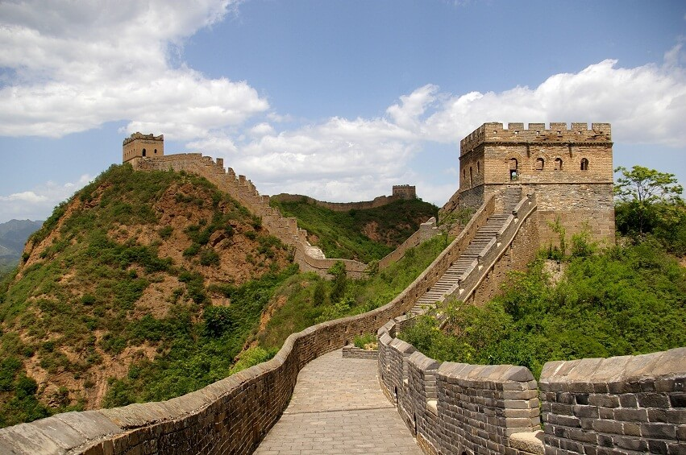
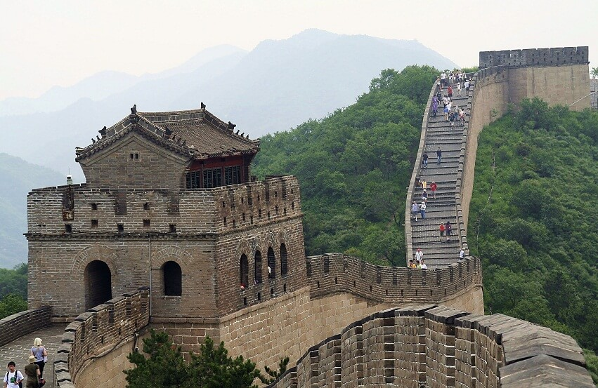
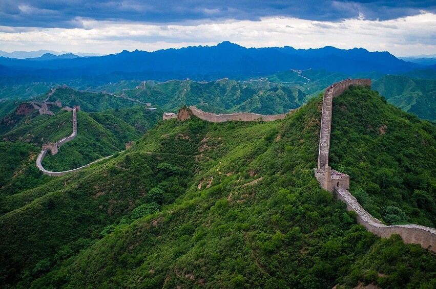
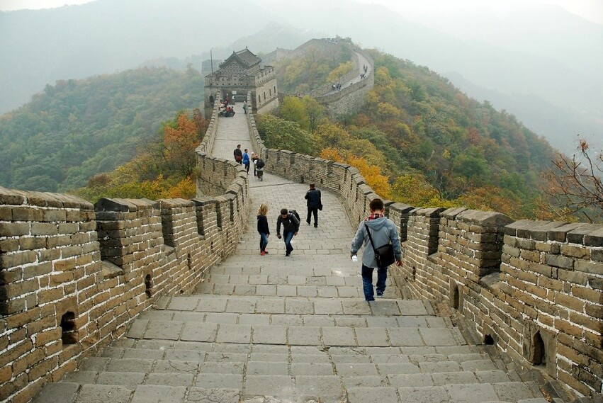

В мире нет другого такого сооружения, которое бы вызывало столько интереса среди ученых, туристов, строителей и космонавтов, как Великая Китайская стена. Ее строительство вызвало много слухов и легенд, лишило жизни сотни тысяч людей и стоило больших финансовых затрат.
Первый император объединенного царства Цинь, дал начало строительству защитно-оборонительной стены на севере своего владения. Для этого возводили новые стены и сторожевые башни, объединяя их с существующими. Назначением возводимых построек была не только защита населения от набегов, но и обозначение границ нового государства.
По последним подсчетам размеров стены, ее длина составляет более 8 тысяч километров. Предположительная общая длина постройки, в том числе не сохранившихся участков, от начала до конца составила бы сегодня более 21 тысячи километров.
Ширина стен (толщина) находится в пределах 5-9 м, при этом у основания она примерно на 1 м шире, чем в верхней части, а высота от 7 до 10 метров. Внешняя стена дополнена прямоугольными зубцами высотой до 1,5 м. По всей длине выстроены кирпичные или каменные башни с бойницами, направленными в разные стороны, со складами оружия, смотровыми площадками и помещениями для охраны.
Предположения, что одну из главных достопримечательностей Китая должно быть видно с Луны, излагались еще несколько веков назад. Но ни один астронавт в докладах о полетах не сделал сообщения, что он ее разглядел невооруженным глазом. Считается, что глаз человека с такого расстояния способен различить объекты, диаметр которых более 10 км, а никак не 5-9 м.
Увеличенные фотографии со спутника позволяют увидеть ограду по всей длине, различить башни и повороты.
В наши годы из Великой Китайской стены сделали символ стойкости китайского народа, создали из нее визитную карточку страны. Каждый побывавший в Китае стремится съездить на экскурсию к доступному участку достопримечательности.
\Великая Китайская стена вошла в список Семи чудес света, и стала объектом Всемирного наследия.